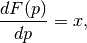

Vocabulary¶
Functional Derivative¶
By definition, [1] functional derivative of a functional ![G[f]](../_images/math/5ac0a7b7e2094a089e2aecfe7caa6f3505ff94b1.png) with respect to
with respect to  along the ‘direction’ of
along the ‘direction’ of  is
is
![\delta G[f][h] = \frac{d}{d\epsilon} G[f+\epsilon h]\vert_{\epsilon=0}.](../_images/math/fc0a04520388c902f4b24025cc27ed808c21d88d.png)
As an example, the functional derivative of ![G[f]=\int dx f^n(x)](../_images/math/d5c0f55427b103ce43dfff2c2eaa621f016d2732.png)
![\delta G[f][h]](../_images/math/08dadcc9cc705f05566b775c07b21827400c968e.png) is
is
![\delta G[f][h] &= \frac{d}{d\epsilon} G[f+\epsilon h] \vert_{\epsilon=0} \\
& = \int nf^{n-1}(x) h(x) dx.](../_images/math/18c36620dfba9456fbccfd81aca1824aa0e1238e.png)
Now the problem appears. We have an unknown function which makes sense because we haven’t specify a direction of the derivative yet.
For a physicist, the savior of integral is Dirac delta. So we use delta distribution as the direction in the functional derivative of action which is an integral,
![\frac{\delta G[f]}{\delta f(y)} = \delta G[f][\delta_y].](../_images/math/6f8f26290b931554095d5228a6648a4fa388b064.png)
It can be ambiguous to just write down without an example. Here is the previous example continued,
![\frac{\delta G[f(y)]}{\delta f(y)} &= \int nf^{n-1}(x) h(x) dx \vert_{h(x)= \delta(x-y)} \\
& = \int nf^{n-1}(x) \delta(x-y) dx \\
& = n f^{n-1}(y) .](../_images/math/51e6479b2afdcdc172faa8e597f4690bf0389d31.png)
It seems that we can just think of as a variable then take the ordinary derivative with respect to it. It is NOT true.
Consider such a functional ![G[f]=\int (f'(x))^2 dx](../_images/math/2c7d95dc82e32557d8589e5a2597ecabbf037f7e.png) where ‘ means the derivative of
where ‘ means the derivative of  .
.
![\frac{\delta G[f]}{\delta f} & = -\int dx 2 f''(x) h(x) \vert_{h(x)=\delta(x-y)} \\
& = -2 f''(y) ,](../_images/math/5b20c8ed0e3faf8e3dc0b677fcb7600ef6e166cf.png)
which is not that straightforward to understand from function derivatives.
| [1] | Chapter 15 of Physical Mathematics |
Legendre Transformation¶
Legendre transformation is NOT just some algebra. Given as a function of  , which is shown in blue, we could find the distance between a line
, which is shown in blue, we could find the distance between a line  and the function value
and the function value  .
.

Meaning of Legendre transformation
However, as we didn’t fix , this means that the distance

varies according to . This is a transformation that maps a function to some other function  which depends on the parameter
which depends on the parameter  . A more pedagogical way of writing this is
. A more pedagogical way of writing this is

To have a Legendre transformation, let’s choose a relation between and . One choice is to make sure we have a maximum distance given , which means the we choose is the point that makes the slope of the same as the line  . In the language of math, the condition we require is
. In the language of math, the condition we require is

which indeed shows that the slope of function and slope of the straight line match eath other at the specified point. Thus we have a relation between and .
Substitute  back into , we will get the Legendre transformation
back into , we will get the Legendre transformation  of .
of .
Back to the math we learned in undergrad study. A Legendre transformation transforms a function of to another function with variable  . Using and its Legendre transformation
. Using and its Legendre transformation  as an example, we can show that the slope of
as an example, we can show that the slope of  is ,
is ,

which is intriging because the slope of is in our requirement. We removed the dependence of in because we have this extra constrain.
Let’s Move to Another Level
We require the function is convex (second order derivative is not negative ). This is required because otherwise we would NOT have a one on one mapping of and .

This graph shows the Legendre transformation and triangles in which G is actually the F we used before and F in the graph corresponds to f.
One imediately notices the symmety of Legendre transformation on interchanging of F and f.
This graph is taken from this paper Making Sense of the Legendre Transform .
This is the triangle that represents the Legendre transformation.
If we have a slope that vanishes, which means is at minimium, then we have the relation
Vector Analysis¶
The ultimate trick is to use component form.

One should be able to find the component forms of gradient  , divergence
, divergence  , Laplace operator, in spherical coordinates, cylindrical coordinates and cartisian coordinates.
, Laplace operator, in spherical coordinates, cylindrical coordinates and cartisian coordinates.